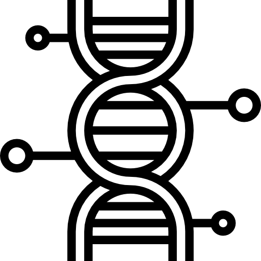

Nuestro Servicios

Extracción y Amplificación
Representa el módulo de Resultados Genéticos o la base de datos de secuencias.

Micropipeteo
Marca los puntos donde se requiere volumen exacto y uso de puntas con filtro para evitar aerosoles.

Área Limpia/Sucia
Identifica las Alertas de Calidad o fallos en los controles negativos (contaminación).